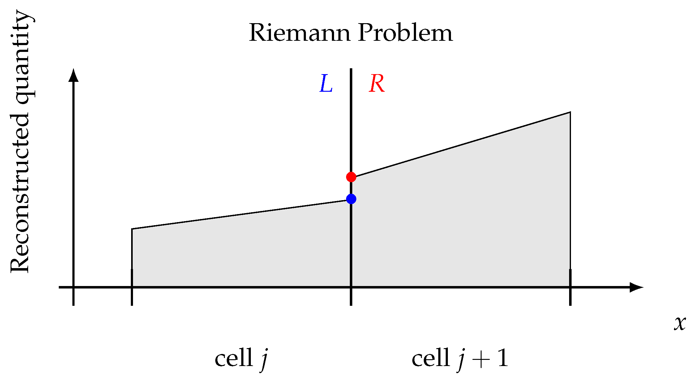

Since $u\,\partial_x u = \partial_x (u^2/2)$,
the same equation is
$$
\frac{\partial u}{\partial t} + \frac{\partial F}{\partial x} = 0,
\qquad F = \frac{u^2}{2}.
$$
This is the conservative form,
$\partial_t Q + \nabla\cdot\mathbf{F} = 0$: $Q$ is a density,
$\mathbf{F}$ its flux. The continuity equation
$\partial_t\rho + \nabla\cdot(\rho\mathbf{v}) = 0$ is one.
Define $\bar{Q}$ as the average $Q$ in each cell, we can write:
$$
\bar{Q}^{n+1}\Delta V = \bar{Q}^n \Delta V - \Delta t\sum_\mathrm{faces} \mathbf{F} \cdot \mathbf{S}
$$
$\rho$ by itself is a conserved quantity, and
$\int_\mathrm{cell}\rho\, \mathrm{d}V$ is the mass in the cell.
This is what we use as one of the conserved quantities in
Project 2.
Face fluxes
The update is exact. A scheme is a formula for $F_{j+1/2}$ from
the two cells sharing the face, $Q_L = Q_j$ and $Q_R = Q_{j+1}$.
Upwind, flow to the right: $F_{j+1/2} = F(Q_L)$.
Lax-Friedrichs:
$$
F_{j+1/2} = \frac{1}{2}\left[F(Q_L) + F(Q_R)\right] - \frac{\Delta x}{2\Delta t}\left(Q_R - Q_L\right).
$$
In the update this gives the scheme of Lecture 18; the second
term is its numerical diffusion, $D = \Delta x^2/2\Delta t$.
The Rusanov flux
There are many ways to construct the fluxes at the cell faces.
One way is the Rusanov flux:
Subscript $L$ and $R$ are quantities calculated
using the fluid variables in the cell to the left and right of
the face, and $v_\mathrm{max}$ is the largest speed at which
information travels across the face. This is what we will be
using in Project 2.
Lax-Friedrichs with $\Delta x/\Delta t$ replaced
by $v_\mathrm{max} \le \Delta x/\Delta t$: less diffusion,
$v_\mathrm{max}\Delta x/2$ instead of $\Delta x^2/2\Delta t$.
Part III · The scheme of Project 2
Project 2
In Project 2, we will solve the equations for an ideal fluid:
These are called "Euler equations". They are the
limit of Navier-Stokes equations when fluid viscosity becomes
zero.
The velocity equation is not in conservation
form. Momentum $\rho\mathbf{v}$ and energy
$U = \rho(\tfrac12 v^2 + u)$ are conserved; their equations are.
A system of conservation laws
In 1D, the Euler equations in conservative form are
$\partial_t Q + \partial_x F = 0$ with
$$
Q = \begin{pmatrix} \rho \\ \rho v \\ U \end{pmatrix}, \qquad
F = \begin{pmatrix} \rho v \\ \rho v^2 + P \\ (U + P)\,v \end{pmatrix},
\qquad U = \frac{1}{2}\rho v^2 + \frac{P}{\gamma - 1}.
$$
Part II applies to the vector $Q$ component by
component. Mass, momentum and energy are conserved to rounding.
In 2D there are two flux vectors, $F_x$ and
$F_y$; the handout lists them.
Signal speeds and the time step
A gas carries information at three speeds: the flow speed $v$,
and sound at $v \pm c_s$,
$$
c_s = \sqrt{\gamma P/\rho}.
$$
The CFL condition with the fastest signal on
the grid, set every step:
$$
\Delta t = C_\mathrm{CFL}\,\frac{\min(\Delta x, \Delta y)}{\max_{ij}\left(c_s + |\mathbf{v}|\right)}.
$$
On a face, $c_s + |\mathbf{v}|$ is the $v_\mathrm{max}$ of the
Rusanov flux.
$C_\mathrm{CFL} \le 1$ is not enough in 2D;
the handout uses $0.4$.
Second order
$Q_L = Q_j$, $Q_R = Q_{j+1}$ is piecewise constant: first order
in space, diffusion $\propto \Delta x$. The handout's scheme:
Half step: advance $\rho, \mathbf{v}, P$ by
$\Delta t/2$ with centered differences (the midpoint rule,
Lecture 6). Second order in time.
Reconstruct: extrapolate to the faces with
the centered slope,
$\rho^{R}_{j} = \rho_j + \tfrac14(\rho_{j+1} - \rho_{j-1})$.
Piecewise linear. Second order in space.
Rusanov flux from the two face values;
update $Q$; recover $\rho, \mathbf{v}, P$.
Two dimensions
Cells $\Delta x \times \Delta y$ indexed by $(i, j)$, four faces
each:
$$
Q_{ij}^{n+1}\,\Delta x\Delta y = Q_{ij}^n\,\Delta x\Delta y
- \left(F_{x,ij} - F_{x,i-1,j}\right)\Delta y\,\Delta t
- \left(F_{y,ij} - F_{y,i,j-1}\right)\Delta x\,\Delta t .
$$
$F_{x,ij}$ is the $x$-flux through the right
face of cell $(i,j)$, from the two cells on either side as in
1D. The $y$-faces use $F_y$.
Periodic boundaries: a layer of ghost cells
copying the far side. Data layout, loops and output are the
agent's part of the project.
The CFL condition in 2D
Why is $C_\mathrm{CFL} = 1$ not safe in 2D? The simplest case:
2D advection, $\partial_t u + \mathbf{v}\cdot\nabla u = 0$,
with Lax-Friedrichs, now averaging four neighbours:
Von Neumann analysis with a 2D mode
$u^n_{j,k} = \xi^n e^{i(k_x j\Delta x + k_y k\Delta y)}$, for
$\Delta x = \Delta y = \Delta$:
$$
\Delta t \leq \frac{\Delta}{\sqrt{2}\,|\mathbf{v}|}.
$$
An extra $\sqrt{2}$ compared with 1D; $\sqrt{d}$ in $d$
dimensions.
Lax-Friedrichs scheme in 2D
Demo of the Lax-Friedrichs scheme in 2D: a Gaussian on a
$128 \times 128$ periodic grid, $\mathbf{v} = (1.5, 1)$, with
$\Delta t$ at the 2D CFL limit.
The peak drops from $1$ to $0.36$ during the
run: in 2D the scheme is diffusive even at the CFL limit. The
smearing is across the direction of motion; along it the
profile keeps its width.
Part IV · Checking a fluid code
What your agent cannot do for you
Three checks
Conservation. Sum $\rho$, $\rho v_x$, $\rho v_y$ and $U$ over
all cells at every snapshot. On a periodic box each total is
constant to rounding, a relative change of order $10^{-14}$.
Symmetry. A symmetric initial condition
stays symmetric.
Resolution. Run $128^2$, $256^2$ and $512^2$.
What the equations determine settles as the grid is
refined.
A sound wave
The handout's test. Perturb a uniform gas,
$\rho = \rho_0 + \rho_1$, $P = P_0 + P_1$, $\rho_1 \ll \rho_0$.
To first order:
A sine wave with $P_1 = c_s^2 \rho_1$ and
$v_x = c_s\rho_1/\rho_0$ travels to the right at $c_s$ with
constant amplitude.
Measure the speed, and the decay of the
amplitude at two resolutions.
Kelvin-Helmholtz instability
The Kelvin-Helmholtz instability occurs at an interface in a fluid
where two sides move at different velocities:
Kelvin-Helmholtz instability
The KH instability is ubiquitous in nature:
Why finite volume?
This is the result from the usual Lax-Friedrichs scheme on the
same problem:
Numerical diffusion is so strong that it
completely overwhelms the instability.
Riemann solvers
To capture discontinuities in the fluid, an even better way is
to introduce a Riemann solver at each cell boundary.

Rusanov is the crudest approximate Riemann
solver: one speed for all three waves. The 5027 part of the
handout adds HLLC.
Summary
Conservative form: the integral form holds across jumps and
fixes the shock speed.
Finite volume: cell averages, face fluxes,
conservation to rounding. The scheme is the flux formula:
Lax-Friedrichs, or Rusanov with the local signal speed.
Project 2: Rusanov with $c_s + |\mathbf{v}|$,
a half step and a linear reconstruction, the 2D CFL
condition.
Checks: conservation, symmetry, resolution,
the sound wave.
Next time: Poisson's equation and relaxation
methods.